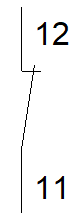
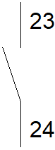
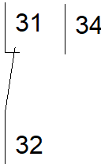

Odborný výcvik – Jednoduché elektromontážní práce | 1. ročník
Elektrotechnické značky a symboly na elektrických zařízeních představují univerzální jazyk pro jejich obsluhu. Tyto grafické prvky nahrazují složité nápisy a umožňují rychlou a snadnou orientaci uživatelů bez ohledu na jejich mateřský jazyk. Díky tomuto mezinárodně srozumitelnému systému značek je možné elektrické přístroje bezpečně a efektivně ovládat po celém světě.
Značení přístrojů poskytuje důležité informace o jejich funkci, technických parametrech, způsobu použití a bezpečnostních požadavcích. Na přístrojích se běžně uvádí například jmenovité napětí, proud, příkon, frekvence, třída ochrany, stupeň krytí IP, typ napájení nebo označení výrobce. Součástí značení mohou být také výstražné, zákazové a příkazové symboly upozorňující na možná rizika.
Keramické pojistky používají značení, které umožňuje rychle rozpoznat jejich základní parametry a zvolit správný typ pro daný elektrický obvod. Při výběru pojistky je důležité sledovat nejen její jmenovitý proud, ale také rozměr, provedení a vypínací charakteristiku. Správná volba pojistky je důležitá pro bezpečnou ochranu elektrického zařízení při přetížení nebo zkratu.
Přesné rozdělení barevného značení podle jmenovitého proudu a typu závitu ukazuje následující SVG tabulka. Přehled odpovídá dodané předloze a umožňuje rychle porovnat, které barvy náleží proudům od 2 A do 80 A.
Z tabulky je patrné, že pojistky se závitem E 27 zahrnují proudové hodnoty od 2 A do 25 A, zatímco vyšší proudy 35 A, 50 A, 63 A a 80 A jsou vedeny se závitem E 33. Barva usnadňuje rychlou orientaci, ale při výměně pojistky je vždy nutné ověřit i ostatní technické údaje.
Keramická pojistka má pevné izolační tělo, které odolává teplu vznikajícímu při vypnutí poruchového proudu. Uvnitř se nachází tavný prvek, který se při nadměrném proudu přeruší a tím rozpojí elektrický obvod. Zdroj uvádí rozměrové řady 10 × 38 mm, 14 × 51 mm a 22 × 58 mm, používané pro různé rozsahy jmenovitých proudů.
Vypínací charakteristika vyjadřuje, jak rychle pojistka reaguje při přetížení nebo zkratu. Ve zdroji jsou uvedena označení TT – velmi pomalá, T – pomalá, M – středně pomalá, F – rychlá a TF – velmi rychlá. Pomalejší provedení se používají tam, kde se při zapnutí mohou krátkodobě objevit vyšší proudy, například u motorů nebo transformátorů. Rychlejší charakteristiky jsou vhodné pro obvody, které vyžadují rychlou reakci na nadproud.
Některé keramické pojistky jsou vybaveny signalizačním terčíkem. Jeho změna polohy nebo uvolnění může upozornit na přepálenou pojistku a usnadnit tak vizuální kontrolu. Při podezření na poruchu je však vhodné stav pojistky ověřit a před výměnou zjistit také příčinu jejího vypnutí.
Při výměně je nutné použít pojistku se správnými parametry. Náhradní pojistka musí odpovídat požadovanému jmenovitému proudu, rozměru a vypínací charakteristice. Použití nevhodné pojistky může způsobit nežádoucí vypínání nebo naopak nedostatečnou ochranu obvodu. Současně je vhodné zkontrolovat stav držáku a kontaktních ploch pojistky.
Zdroj odkazuje na normu IEC 60127, která se zabývá požadavky na pojistky, jejich časové charakteristiky, vypínací schopnost a bezpečnost. Při praktické práci se proto nelze řídit pouze barvou. Rozhodující jsou vždy úplné technické údaje konkrétní pojistky a požadavky výrobce zařízení.
Zdroj: Jak číst barvy a značení keramických pojistek: kompletní průvodce
Také jističe mohou být označeny barevným rozlišením, které usnadňuje rychlé určení jejich jmenovitého proudu In. Barevný terčík na čele jističe je pevnou součástí přístroje a spolu s číselným údajem pomáhá zabránit záměně jednotlivých proudových hodnot.
Následující přehled uvádí přiřazení barev terčíků k jednotlivým hodnotám jmenovitého proudu. Přehled zahrnuje hodnoty od 0,2 až 63 A.
Přehled ukazuje, že například proud 2 A odpovídá růžové, 10 A barvě červené, 16 A barvě šedé, 20 A barvě modré a 25 A barvě žluté. Vyšší proudy jsou dále rozlišeny například fialovou pro 32 A, bílou pro 50 A a měděnou pro 63 A.
Barevné značení pomáhá při montáži, kontrole i údržbě rozváděčů. Technik díky němu rychleji pozná správnou proudovou hodnotu jističe bez nutnosti číst všechny údaje na jeho štítku. Přesto je při výměně nebo kontrole vždy nutné ověřit i úplné označení přístroje, jeho charakteristiku a další technické parametry.
Elektrické přístroje se ve schématech označují písmeny, která usnadňují jejich rychlou identifikaci. Za písmenným označením bývá zpravidla uvedeno pořadové číslo, například KM1, FU2 nebo HL1.
| Název | Písmenné značení | Schematická značka |
|---|---|---|
| Jistič | FA | |
| Proudový chránič | FI | |
| Jistič s proudovou a nadproudovou ochranou | FIA | |
| Stykač | KM | |
| Cívka stykače/relé | KM / KA | |
| Cívka se zpožděným rozběhem | KT | |
| Cívka se zpožděným odtahem | KT | |
| Relé | KA | |
| Impulzní relé | KI | |
| Časové relé | KT | |
| Napěťové relé | KU | |
| Svodič přepětí | FV | |
| Pojistka | FU | |
| Pojistkový odpojovač | FU | |
| Hlavní vypínač | QM | |
| Signálka | HL | |
| Hlavní jistič | QF |
Pomocné kontakty jsou součástí řídicích a signalizačních obvodů. Na rozdíl od hlavních kontaktů obvykle nespínají výkonový obvod spotřebiče, ale slouží například k samodržení stykače, blokování jiného přístroje, signalizaci provozního stavu nebo předávání informace do další části řízení.
Svorky pomocných kontaktů se označují dvoumístným číslem. První číslice určuje pořadí kontaktu v přístroji a druhá číslice vyjadřuje jeho funkci. Díky tomu lze již z označení svorek poznat, zda jde o kontakt rozpínací, spínací nebo přepínací.

V klidu je sepnutý. Po přitažení cívky se rozpojí.
V klidu je rozepnutý. Po přitažení cívky se sepne.
Společná svorka 32 se přepíná mezi svorkami 31 a 34.První číslice určuje pořadí pomocného kontaktu. Druhá číslice určuje jeho funkci: 1–2 je kontakt rozpínací, 3–4 kontakt spínací a 1–2–4 kontakt přepínací.
13–14 = první spínací kontakt
21–22 = druhý rozpínací kontakt
| Typ pomocného kontaktu | Funkční číslice | Příklady označení svorek | Funkce v klidovém stavu |
|---|---|---|---|
| Rozpínací kontakt (NC) | 1–2 | 11–12, 21–22 | Kontakt je sepnutý a po přitažení cívky se rozpojí. |
| Spínací kontakt (NO) | 3–4 | 13–14, 23–24 | Kontakt je rozepnutý a po přitažení cívky se sepne. |
| Přepínací kontakt | 1–2–4 | 31–32–34 | Společná svorka se přepne z rozpínacího na spínací kontakt. |
| Kontakt se zvláštní funkcí | 5–6 / 7–8 | 15–16, 17–18 | Vyhrazené číslování například pro časově zpožděné kontakty. |